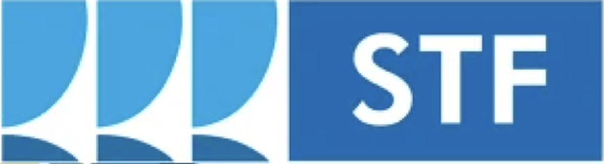

O estudo do Supremo Tribunal Federal e do Superior Tribunal de Justiça com profundidade acadêmica.
A Liga Acadêmica de Tribunais Superiores da UFRN é um projeto de pesquisa, ensino e extensão voltado ao aprofundamento nos temas e na atuação perante o Supremo Tribunal Federal e o Superior Tribunal de Justiça.
Acompanhamos a jurisprudência, debatemos os julgamentos mais relevantes do país e aproximamos estudantes da prática constitucional e infraconstitucional — da pesquisa à tribuna.
Grupos de estudo, artigos e informativos sobre precedentes, repercussão geral e recursos repetitivos.
Aulas, capacitações e ciclos de formação com professores e profissionais que atuam nas Cortes.
A Simulação de Tribunais Constitucionais, eventos abertos e conteúdo gratuito para a comunidade.
Guardião da Constituição e guardião da legislação federal: entender como o STF e o STJ decidem é entender o Direito brasileiro.

Controle de constitucionalidade, repercussão geral, direitos fundamentais e a dinâmica do Plenário.
Casos em pauta no STF e no STJ e as decisões mais recentes, atualizados automaticamente todos os dias.

Estudantes no papel de ministros, advogados e procuradores, construindo teses sobre um caso concreto — com capacitações conduzidas por quem atua nas Cortes.
Conhecer a STCOs estudantes da UFRN que criaram a Liga e retomaram a tradição da Simulação de Tribunais Constitucionais.
Análises, informativos e artigos sobre os julgamentos que moldam o Direito brasileiro.
Conversas com professores, advogados e servidores que vivem o dia a dia do STF e do STJ.
Aula inaugural, capacitações e encontros da Liga, para assistir quando quiser.
Processos seletivos, eventos e submissões em um só lugar.
O que publicamos no Instagram e no LinkedIn aparece aqui.